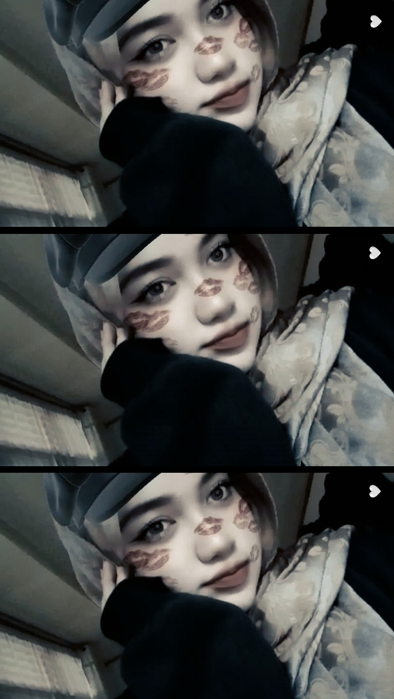

Loading your little world...
Hello, I'm
Welcome to my little world. This website tells a story about who I am, what I love, the people who make me happy, and the dreams I'm chasing every single day.
Explore More
Get to know me better ♡
Hi, nice to meet you! ♡
I'm Putri Rindyani, but you can call me Putri or Puput.
My closest friends usually call me Adek. It's a nickname that somehow stayed with me, and I honestly love it.
I'm someone who appreciates little things, warm conversations, genuine efforts, and sweet moments.
I believe that simple gestures can make someone feel deeply loved.
If one day I have someone special, I'd absolutely melt when I'm called sayangku, cintaku, dedekk, or my princess.
Things that make me happy every day ✨
Makeup is my favorite way to express myself and boost my confidence.
Listening to music makes every day feel calmer and happier.
I enjoy singing in my room like I'm having my own little concert.
I love dancing, especially when nobody is watching. 🤍
Working out helps me stay healthy, active, and motivated.
Swimming is one of my favorite activities to refresh both body and mind.
I enjoy playing badminton with friends during my free time.
Running gives me positive energy and helps clear my mind.
Pilates helps me improve flexibility, balance, and inner peace.
Every journey shapes who I am today 🎓
The beginning of my learning journey, where I built curiosity and confidence.
A place that helped me grow, learn discipline, and create wonderful memories.
I found great friendships, valuable experiences, and started dreaming about my future.
Currently pursuing my education in Midwifery while preparing myself to become a compassionate healthcare professional.
The people who make my life brighter 🤍
Alya is my "twin that I met later in life." She was born on 30 July 2005, and I was born on 31 July 2005.
That's why we always joke that we're twins who met after growing up.
Me and Alya always call Bunga "Umi."
It started as a funny nickname, and now we almost never call her by her real name anymore.
We've been best friends for almost six years. Through laughter, tears, unforgettable memories, and countless adventures, we've always stayed together. They are more than friends — they are my second family. 🤍
Keep dreaming, keep believing ✨
When I was younger, I dreamed of becoming a military or police academy cadet. Although life took me in a different direction, I never stopped believing that every path has its own purpose.
Now I'm studying Midwifery at Poltekkes Kemenkes. InshaAllah, I'll graduate this year and begin a new chapter of my life.
Right now, I'm preparing myself to work abroad. I can't tell you the country yet... it's still my little secret. 🤍 No matter how long it takes, I'll keep trying until I make it.
Little things that describe me 🎀
Thank you for visiting my little world.
I hope you enjoyed getting to know me.
See you again! 🌸